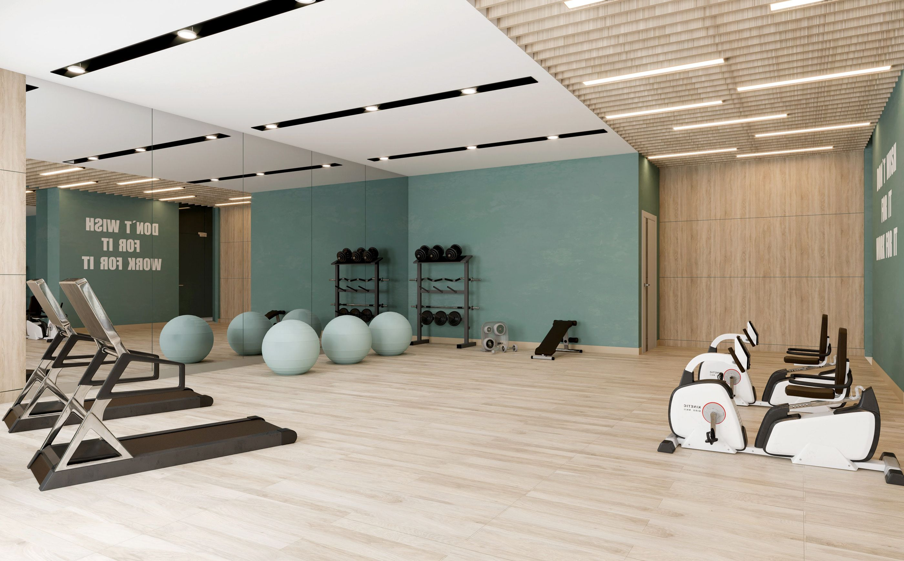

¡Ponte en forma!
¡Descubre tu mejor versión en el Gimnasio Elite Gym!
En nuestro gimnasio, te ofrecemos mucho más que un lugar para ejercitarte. Aquí encontrarás un ambiente
inspirador
y motivador donde podrás alcanzar todas tus metas de salud y bienestar.
Nuestro equipo de instructores altamente capacitados estará a tu lado en cada paso del camino, brindándote el
apoyo y la orientación necesarios para que logres resultados extraordinarios. Ya sea que quieras mejorar tu
condición física, perder peso, aumentar tu fuerza o simplemente mantenerte en forma, tenemos las clases y
servicios adecuados para ti.
¿Quieres disfrutar de divertidas clases grupales como zumba, yoga o spinning? ¿Prefieres trabajar con un
entrenador personalizado que diseñe un programa a medida según tus necesidades y objetivos? En el Gimnasio Elite
Gym, encontrarás una amplia variedad de opciones para que encuentres la rutina perfecta que se adapte a tu estilo
de vida.
Además, nuestro gimnasio cuenta con instalaciones modernas y equipamiento de última generación, creando un
entorno
propicio para que te sientas cómodo y motivado durante tus sesiones de entrenamiento.
No solo nos preocupamos por tu estado físico, sino también por tu bienestar emocional. En Elite Gym, encontrarás
un espacio acogedor donde podrás desconectar del estrés diario y cuidar tu mente a través de clases de relajación
y meditación.
¡Únete a nosotros y sé parte de la comunidad del Gimnasio Elite Gym! Descubre cómo tu cuerpo se transforma, cómo
aumenta tu energía y cómo te sientes más seguro y positivo en cada aspecto de tu vida.

Beneficios del Gimnasio
| Ventajas de ir al gym |
Desventajas de no ir al gym |
| Mejora tu condición física y cardiovascular. |
Pérdida de oportunidades para mejorar la condición física y cardiovascular. |
| Ayuda a perder peso y mantener un peso saludable. |
Riesgo de aumento de peso y problemas de salud asociados al sedentarismo. |
| Aumenta la fuerza y resistencia muscular. |
Pérdida de fuerza y resistencia muscular. |
| Reduce el estrés y mejora el estado de ánimo. |
Mayor probabilidad de experimentar estrés y cambios de ánimo negativos. |
| Proporciona un ambiente motivador y social. |
Falta de interacción social y motivación para mantener un estilo de vida saludable. |
¿Por qué elegirnos?
Disciplina
Nos caracterizamos por seguirte durante todo el proceso de tu objetivo a alcanzar.
Nutrición
Acompañamiento de un mejor estilo de alimentación durante todo el proceso de tu cambio.
Música
Porqué sabemos que la música te inspira.Contamos con instalaciones con música que te inspirará a sacar lo
mejor de ti.
Instructores
Contamos con instructores altamente calificados para que logres tu objetivo.
Redes Sociales

Facebook
+100k

Instagram
+250k

Twitter
50k

TikTok
1M